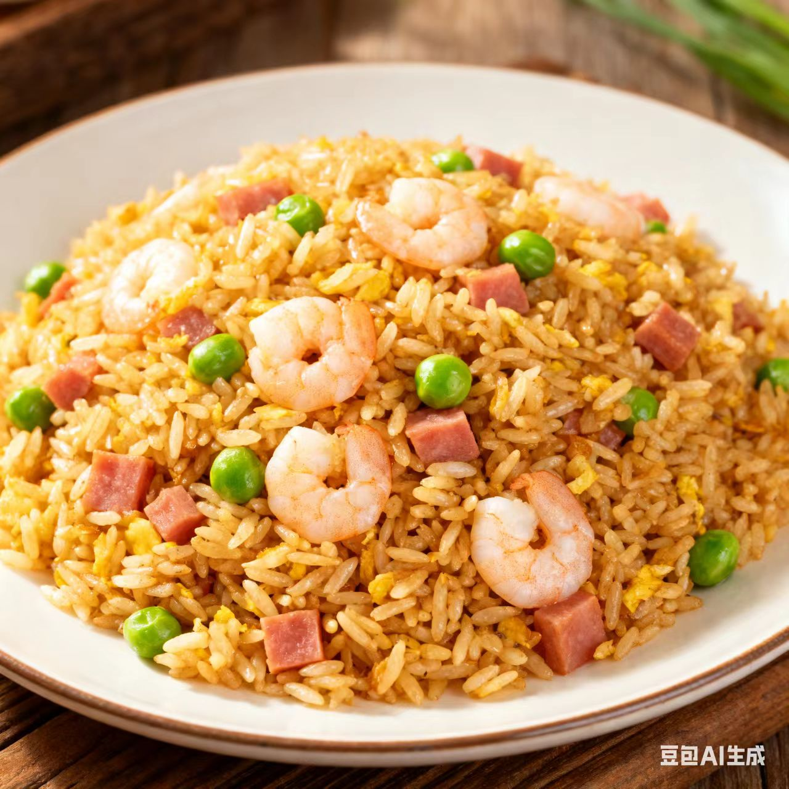
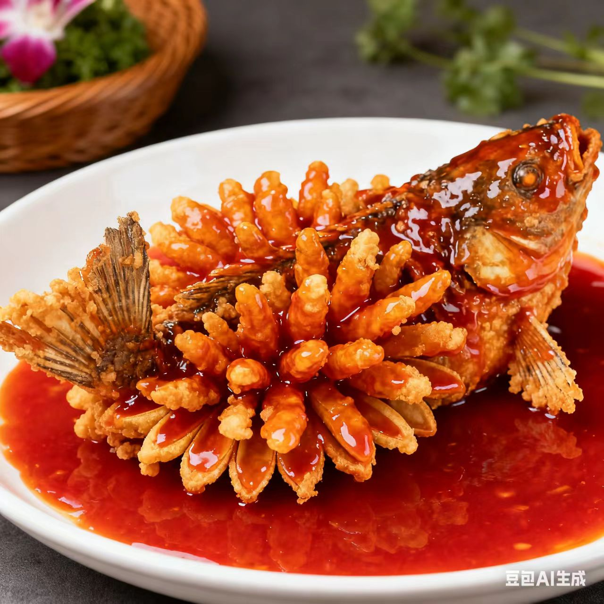

淮扬菜 · Huaiyang Cuisine
清鲜雅丽里的文人风骨与烟火温柔
一、起源与历史
淮扬菜发源于淮安、扬州一带（古江淮地区），隋唐时因运河漕运成为“东南佳味”，明清跻身“四大菜系”，烹饪思想强调“本味为上”，讲究“清鲜平和、浓而不腻、淡而不薄”的复合协调
二、地理与气候影响
江淮地区河网密布、物产丰饶（河鲜、家禽、时蔬资源极盛），气候温润让饮食偏向“雅致清淡”，运河商埠的繁荣更让淮扬菜融合了南北食材与技法
三、主要烹调技法
- 炖
- 焖
- 煨
- 焐
- 蒸
每种技法都追求“入味而不夺味”，如煨菜软嫩酥烂，蒸菜清鲜爽洁，炒功讲究“火功独到”
四、代表菜肴
-
扬州炒饭

-
松鼠鳜鱼

五、风味与审美
淮扬菜的独特在于“以和为美、以雅为魂”，追求鲜中带甜、嫩中含润的平衡，味觉逻辑体现了江淮人“精致而从容”的生活哲学。
六、文化意象
淮扬菜不仅是饮食，更是江南文人文化的载体——从扬州盐商宴席的“满汉全席支流”到寻常人家的“三头宴”，淮扬菜承载了“烟火气里的书卷气”与“运河文化的包容度”
七、地方俗语
烟花三月下扬州，不吃淮扬菜枉游
狮子头要肥七瘦三，文思豆腐要细如牛毛
拓展视野：视频
拓展视野：学术资料
| 研究论文 / 报告名称 | 链接 |
|---|---|
| 《淮扬菜饮食文化的历史溯源》 | 查看论文 |
| 《运河文化对淮扬菜的影响研究》 | 查看论文 |